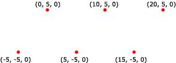

A point list is a collection of vertices that are rendered as isolated points. Your application can use them in 3D scenes for star fields, or dotted lines on the surface of a polygon. The following illustration depicts a rendered point list.

Your application can apply materials and textures to a point list. The colors in the material or texture appear only at the points drawn, and not anywhere between the points.